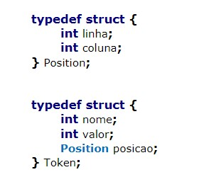

Analisador Léxico e Gramática.
Frank Coelho de Alcantara - 2021
Voltando um tanto: Regex
Regex - Especificadores
| metacaractere | conhecido como | significado |
|---|---|---|
| . | curinga | qualquer caractere, exceto a quebra de linha \n |
| [...] | conjunto | qualquer caractere incluído no conjunto |
| [^...] | conjunto negado | qualquer caractere não incluído no conjunto |
| \d | dígito | o mesmo que [0-9] |
| \D | não-digíto | o mesmo que [^0-9] |
| \s | branco | espaço, quebra de linha, tabs etc.; o mesmo que [ \t\n\r\f\v] |
| \S | não-branco | o mesmo que [^ \t\n\r\f\v] |
| \w | alfanumérico | o mesmo que [a-zA-Z0-9_] (mas pode incluir caracteres Unicode; ver flag_unicode) |
| \W | não-alfanumérico | o complemento de \w |
| \ | escape | anula o significado especial do metacaractere seguinte; por exemplo, \. representa apenas um ponto, e não o curinga |
Quantificadores e Âncoras
| metacaractere | significado |
|---|---|
| {n} | exatamente n ocorrências |
| {n,m} | no mínimo n ocorrências e no máximo m |
| {n,} | no mínimo n ocorrências |
| {,n} | no máximo n ocorrências |
| ? | 0 ou 1 ocorrência; o mesmo que {,1} |
| + | 1 ou mais ocorrência; o mesmo que {1,} |
| * | 0 ou mais ocorrência |
| ^ | início do texto, ou de uma linha com o flag re.MULTILINE |
| \A | início do texto |
| $ | fim do texto, ou de uma linha com o flag re.MULTILINE; não captura o \n no fim do texto ou da linha |
| \Z | fim do texto |
| \b | posição de borda, logo antes do início de uma palavra, ou logo depois do seu término; o mesmo que a posição entre \W e \w ou vice-versa |
| \B | posição de não-borda |
Regex - Na Prática
Usando o site www.regex101.com
Identificar um número de telefone da forma como a pessoa escrever incluíndo os dados internacionais de ddi e ddd.
Identificar um CEP, segundo o padrão brasileiro, da forma como a pessoa escrever, incluíndo espaços, pontos e hífens.
Identificar um CPF, segundo o padrão brasileiro, da forma como a pessoa escrever, incluíndo espaços, pontos e hífens.
Analisadores Léxicos
Responsáveis pela identificação e validação dos lexemas da linguagem.
Utilizam MEF ou REGEX para identificar estes Lexemas, ou não.
A cada lexema identificado é atribuído uma estrutura contendo dados sobre o lexema.
A classe de cada lexema, seu tipo e seu valor são dados comuns nesta atribuição.
Estruturas de Lexemas
Cada linguagem usada para criar um interpretador utiliza uma solução diferente.
Interpretadores criados em C, por exemplo, podem usar structs ou um conjunto dela para armazenar os dados relativos a cada lexema.
Cada Lexema corretamente identificado é armazenado na tabela de símbolos.
Gramáticas
A linguagem das linguagens: Uma gramática é uma lista de regras que determina como podem ser criadas e utilizadas todas as strings de uma linguagem;
Noam Chomsky é um dos pesquisadores mais importantes nesta área. Devemos ao trabalho de Chomsky a classificação das Gramáticas que usamos hoje.
Classificação de Chomsky
- Gramáticas Irrestritas;
- Gramáticas Sensíveis ao Contexto;
- Gramáticas Livres de Contexto;
- Gramáticas Regulares.
Linguagens
| Linguagem | Gramática | Identificador |
|---|---|---|
| Recursivamente Enumeráreis | Gramáticas Irrestritas | Máquina de Touring |
| Linguagens sensíveis ao contexto | Gramáticas sensíveis ao contexto | Maq. Turing com fita limitada |
| Linguagens livres de contexto | Gramáticas livres de contexto | Autômato com pilha |
| Linguagens Regulares | Gramáticas regulares | Autômato finito |
Gramáticas - definição
Uma Gramática Formal: 4-tupla: – $𝑮 := \{𝑵, \Sigma, 𝑷, 𝑺\}$
- $S\rightarrow \text{símbolo inicial}$
- $\Sigma \rightarrow \text{símbolos terminais}$
- $P \rightarrow \text{regras de produção}$
- $N \rightarrow \text{símbolos não terminais}$
Símbolos terminais
Símbolos termais tem esse nome por que não existem regras para substitui-los. Uma vez gerados, os símbolos terminais são permanentes. Consequentemente, os símbolos termais são os símbolos da linguagem.
Livres de Contexto
“uma gramática livre de contexto descreve um conjunto de strings, ou linguagem, por meio da definição da estrutura das strings da linguagem. Esta definição é recursiva, indicando que cada regra produção pode, ou não, ser utilizada para definir novas regras de produção”
Regras de Produção
Os símbolos que aparecem à esquerda da seta, são não terminais e representados por letras latinas maiúsculas $(𝐴, 𝐵, 𝑆, …)$.
O símbolo inicial é o que aparece do lado esquerdo da primeira regra $𝑆$.
Pode ser qualquer símbolo, usarmos o $𝑆$ por convenção.
Regras de Produção
- $𝑆 \rightarrow 𝐴𝐵$
- $𝑆 \rightarrow 𝐴𝑆𝐵$
- $𝐴 \rightarrow a$
- $𝐵 \rightarrow b$
Vamos produzir a string:“aabb”
Produzindo $aabb$
Temos $S \rightarrow \emptyset$ e aplicamos 2 $𝑺 \rightarrow 𝑨𝑺𝑩$
Temos de $S \rightarrow ASB$ e aplicamos 3 $A \rightarrow a$
Temos de $S \rightarrow aSB$ e aplicamos 4 $B \rightarrow b$
Temos de $S \rightarrow aSb$ e aplicamos 1 $𝑺 \rightarrow AB$
Temos de $S \rightarrow aABb$ e aplicamos 3 $A \rightarrow a$
Temos de $S \rightarrow aaBb$ e aplicamos 4 $B \rightarrow b$
Conseguimos: $S \rightarrow aabb$
Exercício 1
Considere a gramática definida por:
- $𝑺 \rightarrow 𝑨𝑩$
- $𝑨 \rightarrow \varepsilon | 𝒂𝑨$
- $𝑩 \rightarrow \varepsilon | 𝒃𝑩$
Encontre uma sequência de substituições para encontrar: $aab$
Gramáticas Regulares
Duas classes de regras de produção.
Lineares à Direita: as regras de produção obedecem: $$𝑨 \rightarrow 𝒘𝑩 \vee 𝑨\rightarrow 𝒘 (𝒘 \in \Sigma^*)$$
Lineares à esquerda: as regras de produção obedecem: $$𝑨 \rightarrow 𝑩𝒘 \vee 𝑨 \rightarrow 𝒘 (𝒘 \in \Sigma^*)$$
Árvores Sintáticas
- $S$
- $S \rightarrow ASB$
- $S \rightarrow aSB$
- $S \rightarrow aSb$
- $S \rightarrow aABb$
- $S \rightarrow aaBb$
- $S \rightarrow aabb$

Backus-Naur Form - BNF
Representa uma gramática.
É mais simples para leitura.
É mais simples para escrita.
ISO/IEC 14977 : 1996(E).
Backus-Naur Form - BNF
$::= \rightarrow $ “é definido como” ou “pode ser substituído por”
$| \rightarrow $ seleção: ou.
$<> \rightarrow $ não terminais.
Você faz a linguagem, você faz as regras!
BNF - Exemplo
- $\text{<𝑙𝑖𝑠𝑡𝑎> ∷= <𝑒𝑙𝑒𝑚𝑒𝑛𝑡𝑜>;<𝑙𝑖𝑠𝑡𝑎> | <𝑒𝑙𝑒𝑚𝑒𝑛𝑡𝑜>}$
- $\text{<𝑒𝑙𝑒𝑚𝑒𝑛𝑡𝑜>∷=<𝑙𝑒𝑡𝑟𝑎> <𝑑𝑖𝑔𝑖𝑡𝑜>}$
- $\text{<𝑙𝑒𝑡𝑟𝑎>∷=𝐴 | 𝐵 |𝐶}$
- $\text{<𝑑𝑖𝑔𝑖𝑡𝑜>∷=1|2|3|4}$
EBNF
- Removeu os $<$$>$ para os símbolos não terminais.
- Símbolos termais expressos entre aspas.
- Uso $*$ para fechamento e $\{\}$ para multiplicação.
- Uso de $+$ para um ou mais.
- Uso de $?$ para seleção.
- Parênteses $()$ para agrupamento;
- Substitui $∷=$ por $=$.
- O uso da vírgula $,$ para explicitar concatenação.
- O ponto encerra uma regra.
BNF - Exemplo
Considere a seguinte gramática definida em BNF
- $<𝒑𝒓𝒐𝒈𝒓𝒂𝒎> ::= 𝒃𝒆𝒈𝒊𝒏 <𝒔𝒕𝒎𝒕\_𝒍𝒊𝒔𝒕> 𝒆𝒏𝒅$
- $<𝒔𝒕𝒎𝒕_𝒍𝒊𝒔𝒕> ::= <𝒔𝒕𝒎𝒕> | <𝒔𝒕𝒎𝒕> ; <𝒔𝒕𝒎𝒕_𝒍𝒊𝒔𝒕>$.
- $<𝒔𝒕𝒎𝒕> ::= <𝒗𝒂𝒓> = <𝒆𝒙𝒑𝒓>$
- $<𝒆𝒙𝒑𝒓> ::= <𝒕𝒆𝒓𝒎> + <𝒕𝒆𝒓𝒎> | <𝒕𝒆𝒓𝒎> − <𝒕𝒆𝒓𝒎>$
- $<𝒕𝒆𝒓𝒎> ::= <𝒗𝒂𝒓> | 𝒄𝒐𝒏𝒔𝒕$
- $<𝒗𝒂𝒓> ::= 𝒂 | 𝒃 | 𝒄$
Derive o seguinte programa:
$\text{begin } a = b + \text{ const } \text{ end}$
BNF - Exemplo
- $ <program> \Rightarrow \emptyset$
- Regra 1: $ <program> \Rightarrow begin <stmt\_list> \text{ end}$
- Regra 2: $<program> \Rightarrow \text{begin } <stmt> \text{ end}$
- Regra 3: $<program> \Rightarrow \text{begin } <var> = <expr> \text{ end}$
- Regra 6: $<program> \Rightarrow \text{begin } a = <expr> \text{ end}$
- Regra 4: $<program> \Rightarrow \text{begin } a = <term> + <term> \text{ end}$
- Regra 5: $<program> \Rightarrow \text{begin } a = <var> + <term> \text{ end}$
- Regra 6: $<program> \Rightarrow \text{begin } a = b + <term> \text{ end}$
- Regra 5: $<program> \Rightarrow \text{begin } a = b + const \text{ end}$
Parsers
Percorrer, varrer. Técnicas de percorrer uma árvore sintática validando a gramática.
Parsers

Exemplo
Considerando a gramática a seguir, apresente as derivações necessárias para encontrar “abbcde”, usando Bottom-up parser.
- $S \rightarrow aABe$
- $A \rightarrow Abc | b $
- $B \rightarrow d$
Regra 2: $abbcde \Rightarrow aAbcde$
Regra 2: $abbcde \Rightarrow aAde;$
Regra 3: $abbcde \Rightarrow aABe;$
Regra 1: $abbcde \Rightarrow S;$
Código
Vamos criar um parser para validar fórmulas de cálculo proposicional.
- Negação: $\neg P$
- Conjunção: $P\land Q$
- Disjunção: $P\lor Q$
- Implicação: $P\rightarrow Q$
- Implicação Dupla: $P\leftrightarrow Q$
Nosso parser deve ser recursivo e usar latex e notação rpn para a digitação das expressões.
EBNF - Exercício
Vamos criar um parser para validar fórmulas de cálculo proposicional.
- $Formula = Constante | Proposicao | FormulaUnaria | FormulaBinaria.$
- $Constante = "T" | "F".$
- $Proposicao = [a-z0-9]+$
- $FormulaUnaria = AbreParen\ OperadorUnario\ Formula\ FechaParen$
- $FormulaBinaria= AbreParen\ OperatorBinario\ Formula\ Formula\ FechaParen$
- $AbreParen = "("$
- $FechaParen = ")"$
- $OperatorUnario = "\neg"$
- $OperatorBinario = "\vee" | "\wedge" | "\rightarrow" |"\leftrightarrow"$
Material de apoio
Você pode baixar o material de apoio clicando aqui